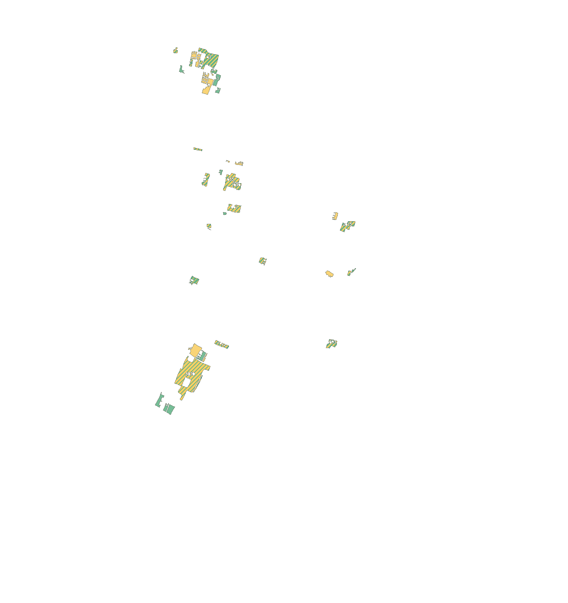
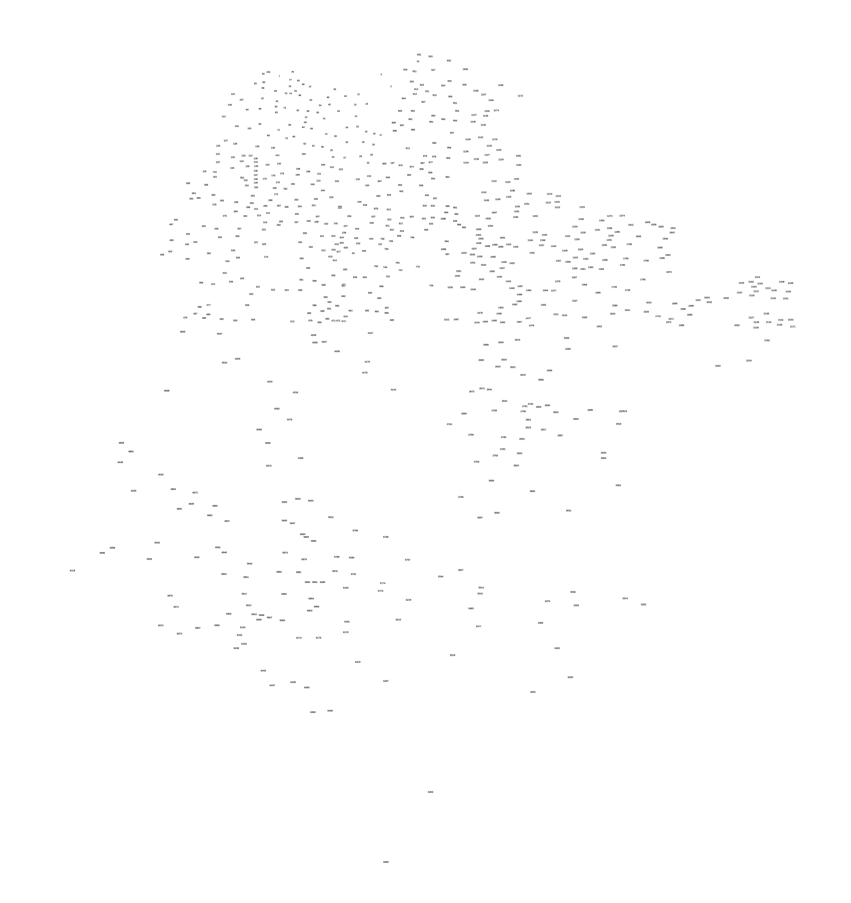

N
Click to identify a plot · Drag to move · Mouse wheel or +/− to zoom
Loading high-resolution sheet…
Geographic context
Sheet 01 area
Sheet 01 reference
Position
Saved locally
Scale-locked mode preserves Plot 77 = 70 dismil and anchors the overlay near the SH69/Punpun junction. Feature-fit mode follows roads and river more closely but changes scale/skew. Neither mode is a surveyed legal parcel overlay.